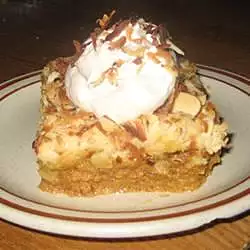

Pumpkin Pie Cake
This is like pumpkin pie with the crust on top. Topped with whipped cream, it is a fun alternative to your basic pumpkin pie.

A breakdown of the time required for this recipe is below, along with servings.
- Prep: 15 mins
- Cook: 50 mins
- Total: 1 hr 5 mins
- Servings: 16
- Yield: 1 9x13 inch (~23x33 cm) cake
Nutritional Information
|
|
% Daily Value * |
| Calories: |
399 |
20% |
| Protein: |
5.6g |
11% |
| Carbohydrates: |
44.8g |
14% |
| Dietary Fibre: |
1.8g |
7% |
| Sugars: |
31g |
129% |
| Fat: |
23.2g |
36% |
| Saturated Fat: |
9.7g |
49% |
| Cholesterol: |
72.9mg |
24% |
| Vitamin A: |
4879.4IU |
98% |
| Niacin Equivalents: |
2mg |
16% |
| Vitamin B6: |
0.1mg |
6% |
| Vitamin C: |
1.9mg |
3% |
| Folate: |
48.5mcg |
12% |
| Calcium: |
141.5mg |
14% |
| Iron: |
1.5mg |
8% |
| Magnesium: |
28.9mg |
10% |
| Potassium: |
225mg |
6% |
| Sodium: |
404.8mg |
16% |
| Thiamin: |
0.1mg |
13% |
| Calories From Fat: |
208.5 |
*Percent Daily Values are based on a 2,000 calorie diet. Your values may be higher or lower depending on your calorie needs.
Ingredients
- 1 (16 ounce (~454g)) can pumpkin
- 1 (12 fluid ounce (~341ml)) can evaporated milk
- 1 cup (200g) brown sugar
- 3 eggs
- 4 teaspoons (16.8g) pumpkin pie spice
- 1 (18.25 ounce (~517g)) package yellow cake mix
- 1/2 cup (60g) chopped walnuts
- 1/2 cup (65g) chopped pecans
- 1 cup (~225g) melted butter
Directions
- Preheat oven to 350 degrees F (175 degrees C). Grease a 9x13 inch (~23x33 cm) cake pan.
- Whisk the pumpkin, evaporated milk, brown sugar, eggs, and pumpkin spice together in a bowl. Pour into the prepared pan. Scatter the cake mix over the top of the pumpkin mixture; sprinkle the nuts over the cake mix. Drizzle the melted butter over the entire cake.
- Bake in the preheated oven until set in the center, about 50 minutes.